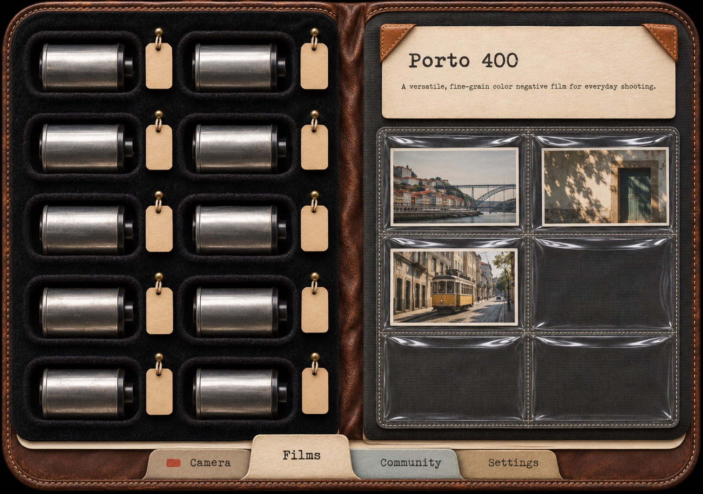
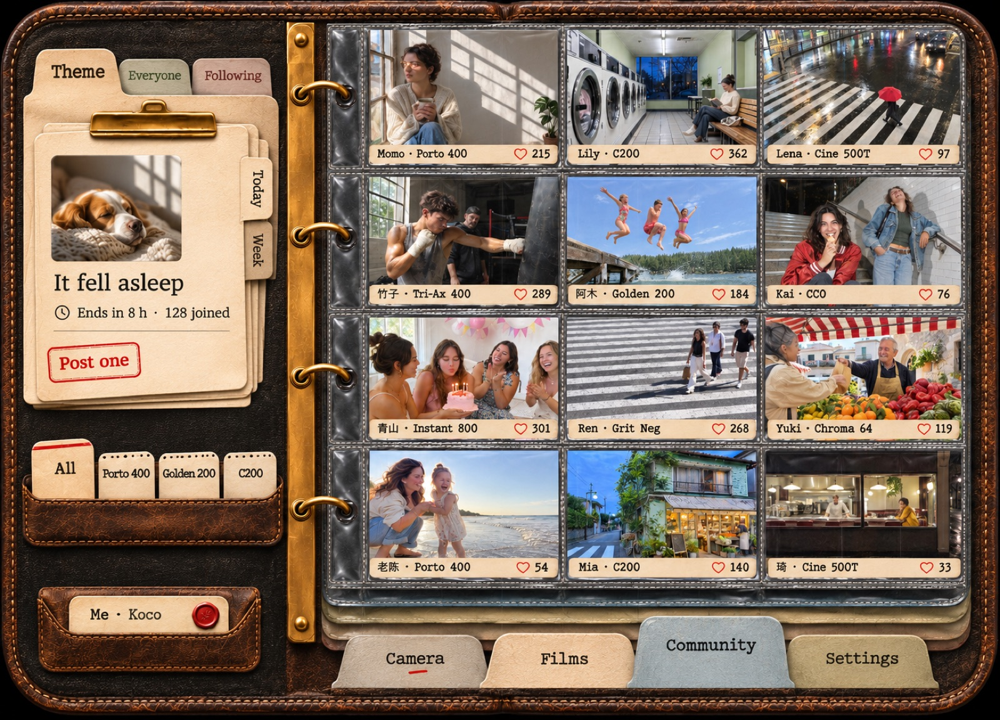

<title>索引耳方案</title>
<meta name="claude:viewport-fit-sides" content="cover">
<style>
:root{--bg:#f4efe6;--fg:#231d17;--muted:#6d645a;--card:#fbf8f2;--line:#ddd3c3;--accent:#a8361d}
@media (prefers-color-scheme:dark){:root:not([data-theme="light"]){--bg:#16130f;--fg:#ece5d8;--muted:#9c9385;--card:#201c17;--line:#36302a;--accent:#e57a55;color-scheme:dark}}
:root[data-theme="dark"]{--bg:#16130f;--fg:#ece5d8;--muted:#9c9385;--card:#201c17;--line:#36302a;--accent:#e57a55;color-scheme:dark}
body{background:var(--bg);color:var(--fg);font:16px/1.7 -apple-system,"PingFang SC",system-ui,sans-serif;padding-left:max(16px,env(safe-area-inset-left,0px));padding-right:max(16px,env(safe-area-inset-right,0px));padding-block:24px 64px}
main{max-width:920px;margin:0 auto}
h1{font-size:24px;margin:0 0 6px;text-wrap:balance}
h2{font-size:19px;margin:34px 0 8px;padding-top:6px;border-top:1px solid var(--line);text-wrap:balance}
h3{font-size:16px;margin:16px 0 6px}
.sub,.small{color:var(--muted)}.small{font-size:14px}
.lead{background:var(--card);border:1px solid var(--line);border-left:4px solid var(--accent);border-radius:10px;padding:12px 16px;margin:14px 0}
figure{margin:10px 0;background:var(--card);border:1px solid var(--line);border-radius:10px;padding:8px}
figure img{width:100%;height:auto;display:block;border-radius:6px}
figcaption{font-size:14px;color:var(--muted);padding:6px 4px 2px}
.pair{display:grid;grid-template-columns:1fr 1fr;gap:10px}
@media (max-width:700px){.pair{grid-template-columns:1fr}}
ul,ol{padding-left:20px;margin:6px 0}li{margin:4px 0}
.tw{overflow-x:auto}table{border-collapse:collapse;font-size:14px;width:100%;min-width:560px}
th,td{border-bottom:1px solid var(--line);padding:7px 8px;text-align:left;vertical-align:top}th{color:var(--muted);font-weight:600;font-size:13px}
.you{color:var(--accent);font-weight:600}
<main>
<h1>索引耳方案：哪里用、哪里不用</h1>
<p class="sub">11 月 26 日 · 只是方案，没改代码。先查了真文件夹、分隔页的样子，和 GPT 讨论后定的；两张概念图由 GPT 画（不是最终美术，图里的英文字只为看懂，正式版字由代码放）。</p>

<div class="lead"><b>核心判断：</b>索引耳只用在“同一个地方的几个并列视图之间切换”，而且一排最多 4–5 个。符合的有四处：<b>相机包主导航（相机/胶卷/社区/设置，替换底部长铜窗和右下回相机的小皮签）</b>、<b>社区范围（题目/大家/关注）</b>、<b>我的（照片/消息/信件）</b>、<b>题目里的今日/本周（侧耳）</b>。胶卷筛选、设置转鼓、看片动作、相机机身零件不用。</div>

<h2>真实的索引耳是怎么回事</h2>
<ul>
<li><b>耳和纸是一整张：</b>文件夹的耳是从同一张卡纸上裁出来的（常见 1/3、1/5 宽），耳边加厚。</li>
<li><b>错开、位置固定：</b>一套文件夹的耳左、中、右错开，所有耳都露在外面；<b>选哪一张，就是把那张抽到最前</b>，耳本身不会横着挪。</li>
<li><b>数量：</b>分隔页一套多是 5–8 个耳；12、26、31 个耳的套装（月份、字母）耳会小到只能看不能好好点。</li>
<li><b>侧耳：</b>活页本里侧边的耳通常是第二种分法，不和顶上的耳混在一排。</li>
</ul>
<p class="small">来源：Staples / Smead 文件夹 1/3 错开耳说明，Avery 皮面分隔页规格（12/25/31 耳）。</p>

<h2>概念图 1 · 胶卷页 + 底部四耳（Duo 内屏）</h2>
<figure><figcaption>GPT 概念图。四个耳是包里四块分隔底板向下伸出来的部分，根部压在页面下面；选中的“胶卷”耳和下沿那条奶油色底板边是同一张。图里“胶卷”最高、在前，另外三个退后——就是要的效果。</figcaption></figure>

<h2>概念图 2 · 社区左页 + 范围顶耳（Duo 内屏）</h2>
<figure><figcaption>GPT 概念图。题目/大家/关注三个顶耳，选中的和下面的题目卡是一张纸；卡片右边是今日/本周侧耳，卡后露出几张旧题（往期）；下面是胶卷纸签皮套和“我的”小皮袋。右页相册不变。<br><b>图里的两个错：</b>① 底部四耳挪到了相册下面，和图 1 位置不一样——正式版四耳每页位置完全相同；② 题目卡是叠在带耳文件夹前面的另一张，正式版要让“题目”耳和卡是同一张纸。</figcaption></figure>

<h2>盘点：现在的每个切换点</h2>
<div class="tw"><table>
<tr><th>地方</th><th>现在</th><th>用索引耳？</th><th>为什么</th></tr>
<tr><td>相机包主导航（Duo 内屏、外屏的包、普通 iPhone）</td><td>底部长铜窗：胶卷/社区/设置；右下小皮签回相机</td><td class="you">用 · 四个底耳：相机/胶卷/社区/设置</td><td>4 个并列地点，每页都在；“相机”进来后不用再找右下小皮签</td></tr>
<tr><td>社区范围</td><td>v7：题目/大家/关注</td><td class="you">用 · 左页卡片顶耳</td><td>3 个并列范围，就是你喜欢的那张图；右页只跟着换照片，不加导航</td></tr>
<tr><td>今日 / 本周 / 往期</td><td>题目里面</td><td class="you">部分用 · 今日/本周做卡片右边侧耳；往期 = 卡后叠着的旧题页</td><td>GPT 指出：往期是历史，不是周期，不该和今日/本周并排。顶上绝不叠第二排耳</td></tr>
<tr><td>我的</td><td>v7：占左右两页</td><td class="you">用 · 照片/消息/信件三个耳管整个个人夹</td><td>3 个并列；“账户”是夹里一个写着“账户”的折角，不做耳</td></tr>
<tr><td>胶卷筛选</td><td>全部 + 8–20 卷</td><td>不用 · 留皮套纸签</td><td>太多，耳会小于 44pt；卷名长短不一</td></tr>
<tr><td>设置</td><td>转鼓</td><td>不用</td><td>转鼓本身就是选择机构，再加耳就是两套逻辑</td></tr>
<tr><td>胶卷页（选卷）</td><td>皮带下的卷 + 卡</td><td>不用</td><td>没有分组；卷不多，一页滚完</td></tr>
<tr><td>看片：留一句 / 处理 / 收回 / 铺开</td><td>纸舌</td><td>不用</td><td>这些是动作，不是地点；耳只表示“换到另一个地方”</td></tr>
<tr><td>投稿夹、作者页、信件对话</td><td>临时进去</td><td>不用 · 回签</td><td>是临时深入，返回要回到原处，不是并列</td></tr>
<tr><td>相机机身：闪光/前后/焦段/画幅、EV、回看分享（视频/信/照片）</td><td>机身按钮、滑片</td><td>不用</td><td>相机上贴纸耳不真实；零件保持零件</td></tr>
<tr><td>外屏合上（相机）</td><td>机身</td><td>机身上不放；从仓门进包后，包里同一排四耳</td><td>外屏圆角一边 59、一边 8，耳要分别避开，不能直接缩小</td></tr>
<tr><td>普通 iPhone 竖屏</td><td>方案中</td><td class="you">用 · 底部四耳（402 宽，每个约 88pt）+ 社区顶耳</td><td>和 Duo 同一套语法，按各机型重新出尺寸</td></tr>
</table></div>

<h2>“相机”这个耳</h2>
<ul>
<li>放在四耳最左：相机 / 胶卷 / 社区 / 设置，暖灰卡纸 + 一点朱红记号（GPT：别用深炭黑，会破坏纸感）。</li>
<li><b>Duo 内屏全平时点“相机”：</b>显示和半折时完全一样的腰平取景相机（你已定，不另设计）。底部那排耳照样在，点胶卷/社区/设置回包。</li>
<li><b>折叠规则：</b>从合上/半折展开到全平，还是先开胶卷页（不变）；半折、合上仍按现在去对应的相机。点“相机”不等于合盖，<b>不会顺手装入正在看的那卷</b>。</li>
<li>外屏、普通 iPhone：同一个“相机”耳，回到拍照画面。</li>
</ul>

<h2>规则</h2>
<ol>
<li><b>数量：</b>一排最多 5 个；主导航固定 4 个。超过就不用耳（如胶卷筛选）。</li>
<li><b>大小：</b>可点区域至少 44pt 高、约 88pt 宽（可以向卡片里延伸一点）；Duo 内屏每个耳约 100pt 宽，普通 iPhone 约 88pt。大字号时耳可以变高、允许两行，<b>不缩字硬塞</b>；德文等长语言用自然短译。</li>
<li><b>层级：</b>一个面上只有一排顶耳（或底耳）；第二层只能用侧耳。</li>
<li><b>位置固定：</b>耳错开排、永不横移、永不换顺序；左撇子模式只镜像快门等操作件，耳的顺序不变。</li>
<li><b>选中：</b>和下面的卡/底板是同一张纸、无缝，略高、在前，字重稍重；没选的退后、稍低、暗一档、带一点阴影。颜色不是唯一的选中标志。</li>
<li><b>颜色：</b>每个入口一种纸色——相机暖灰（朱红记号）、胶卷奶油、社区浅蓝灰、设置卡其；社区里题目/大家/关注另用三种淡色。<b>只染耳和露出的窄边，不染整页</b>；相册塑料袋、转鼓、相机机身保持各自材质。</li>
<li><b>字：</b>美术里的耳全部空白，字由代码放（换语言自动重排）。</li>
<li><b>动画：</b>点耳后选中的那张抬起约 4–6pt 到前面、旧的退到后面，约 0.2 秒，内容淡入淡出，一下轻的纸感震动；取景画面不跟着动；“减少动态效果”打开时不位移。底部耳区可以左右滑着选，但只在耳区，免得和相册、题目横滑打架。</li>
<li><b>读屏：</b>按“标签组”读，报出选中项，实测 VoiceOver。</li>
</ol>

<h2>和 GPT 的讨论</h2>
<div class="tw"><table>
<tr><th>话题</th><th>结论</th></tr>
<tr><td>推广到全 App</td><td>一致：用；但不把所有东西都变成同一张纸，相册袋、转鼓、机身保留材质。</td></tr>
<tr><td>主导航放哪</td><td>采纳 GPT 的修正：耳是包里四块分隔底板向下伸出的部分，根部压在页面下面，不是挂在皮包外沿。不放顶上（会抢社区卡片的顶耳）。</td></tr>
<tr><td>今日/本周/往期</td><td>采纳 GPT 的问题，没采纳它的改名（它建议“每日/每周/限定”）：保留今日/本周侧耳，往期改成卡后的旧题叠页。</td></tr>
<tr><td>我的</td><td>一致：三耳管整个个人夹，不是左右页各一套；账户折角要露出“账户”二字。</td></tr>
<tr><td>全平相机</td><td>GPT 建议重画一张全屏取景；你已定直接复用半折的腰平取景，按你的来。</td></tr>
<tr><td>颜色</td><td>一致：可以分色，但只染耳和窄边；相机耳用暖灰不是炭黑。</td></tr>
<tr><td>不用耳的地方</td><td>全部一致。</td></tr>
<tr><td>尺寸</td><td>GPT 提醒 44×88 只是起点：402 宽要扣圆角边距，外屏两种圆角分别避开。</td></tr>
</table></div>
<p class="small">GPT 原文：project/discuss/folder-tabs.md</p>

<h2>要 GPT 新画的部件</h2>
<ul>
<li>四块分隔底板的下伸耳（空白，四种纸色，各有选中/没选两态），Duo 内屏、外屏、普通 iPhone 各一套尺寸。</li>
<li>社区题目夹：三个顶耳的卡（三种淡色 × 选中/没选）、今日/本周侧耳、卡后旧题叠页。</li>
<li>我的个人夹：照片/消息/信件三耳 + “账户”折角。</li>
<li>拿掉：长铜窗、右下回相机皮签。</li>
</ul>

<h2>怎么推进</h2>
<ol>
<li>社区 v7 第二步（主页左页）直接按顶耳做——部件和这套规则一起出。</li>
<li>主导航换四个底耳 + “相机”入口（Duo 内屏 → 外屏的包 → 普通 iPhone 竖屏）。</li>
<li>“我的”三耳跟 v7 的“我的”一步做。</li>
</ol>
<p class="small">每一步先出 GPT 部件给你看，再接代码。</p>

<h2>要你定的（也在决定页上）</h2>
<div class="q"><b>1. 主导航换成四个底耳（相机/胶卷/社区/设置），拿掉长铜窗？</b><br>A 换成四个底耳（<span class="you">推荐</span>）· B 保留长铜窗（加“相机”），耳只用在页面里面</div>
<div class="q"><b>2. 每个入口一种纸色？</b><br>A 只染耳和露出的窄边（<span class="you">推荐</span>）· B 整页都染 · C 都用奶油色，只靠前后区分</div>
<div class="q"><b>3. 题目里的今日/本周/往期？</b><br>A 今日/本周做侧耳，往期是卡后旧题叠页（<span class="you">推荐</span>）· B 三个都做侧耳</div>
<div class="q"><b>4. 先做哪个？</b><br>A 先社区 v7 第二步的顶耳，再换主导航（<span class="you">推荐</span>）· B 先换主导航 · C 一起做</div>
</main>
